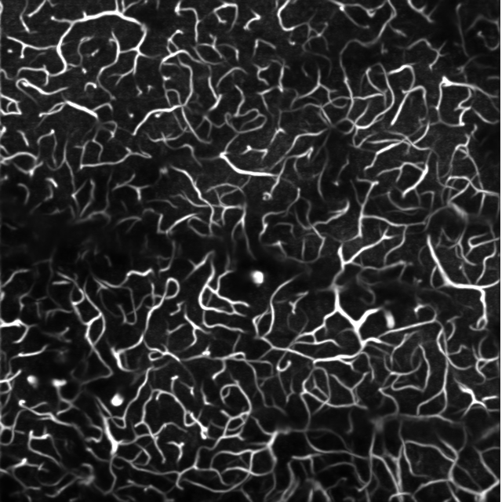
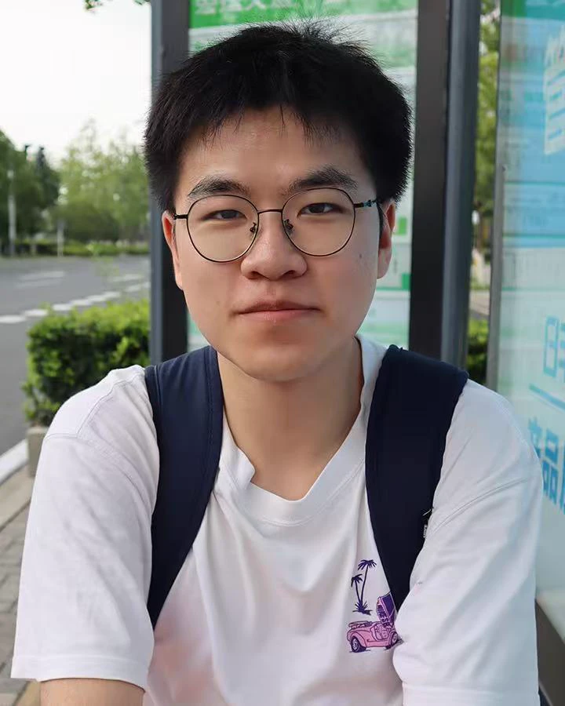
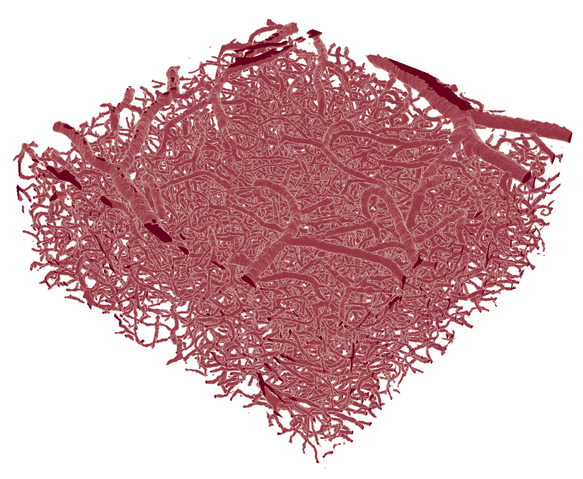
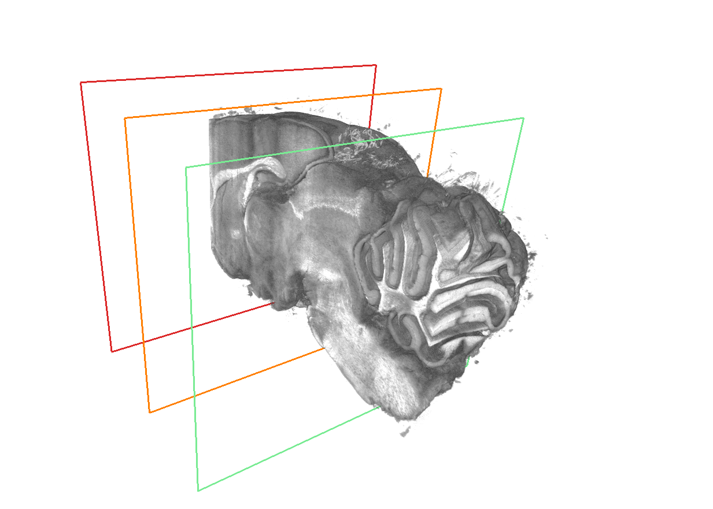

OCT Angiography from M-Mode OCT
I developed a method to improve vessel contrast in angiograms derived from M-mode OCT scans.
Manuscript in preparation.


I am a master’s student at Southern University of Science and Technology (SUSTech), advised by Prof. Jianbo Tang.

My research combines biomedical optics and computational imaging. I use optical coherence tomography angiography (OCTA) to quantify 3D vascular networks. I also build imaging systems, write acquisition software, and run imaging experiments.

I developed a method to improve vessel contrast in angiograms derived from M-mode OCT scans.
Manuscript in preparation.

I adapted VesselFM to segment vessels in OCTA volumes and built vascular graphs to measure vessel geometry and connectivity.
Manuscript in preparation.
Best Student Paper Award, PIBM 2026


I helped build and align a deep-UV imaging module for serial sectioning. I wrote software to control the camera and stage, correct for uneven illumination, and stitch image tiles.
Manuscript in preparation.

Jianbo Tang, Hengming Jing, Jingyi Yang, Wei Chen
Chinese Journal of Lasers · Invited review
Xuena Zhai, Hengming Jing, Houxu Chen, Shuaibin Chang, Jianbo Tang
Journal of Innovative Optical Health Sciences
Fen Yang, Chuxian Chen, Lingxuan Meng, Hengming Jing, Xinyu Liu, Wei Chen, Shih-Chi Chen, Jianbo Tang
Optics Letters
Fen Yang, Hengming Jing, Shuaibin Chang, Heng Sun, Wei Chen, Jianbo Tang
Optics Letters
Junxiong Zhou, Hengming Jing, Meiyu Li, Jianbo Tang
European Conferences on Biomedical Optics
Software Development Intern, Raymind (2026)
I developed a workflow to estimate leukocyte proportions from bright-field and fluorescence images. In an internal evaluation against same-day complete blood counts, the workflow reduced mean absolute error by about 75% compared with the company’s previous method.